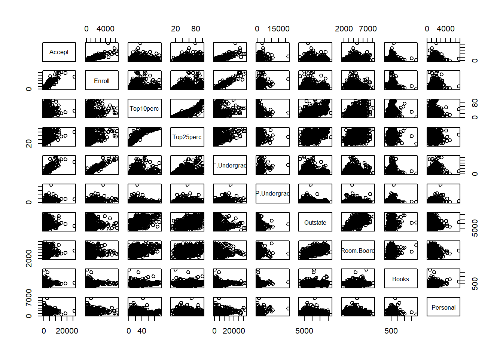
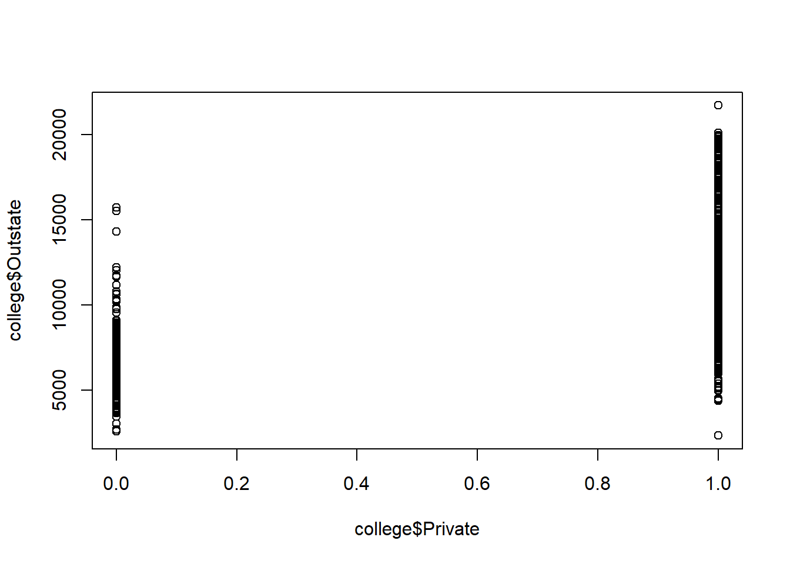
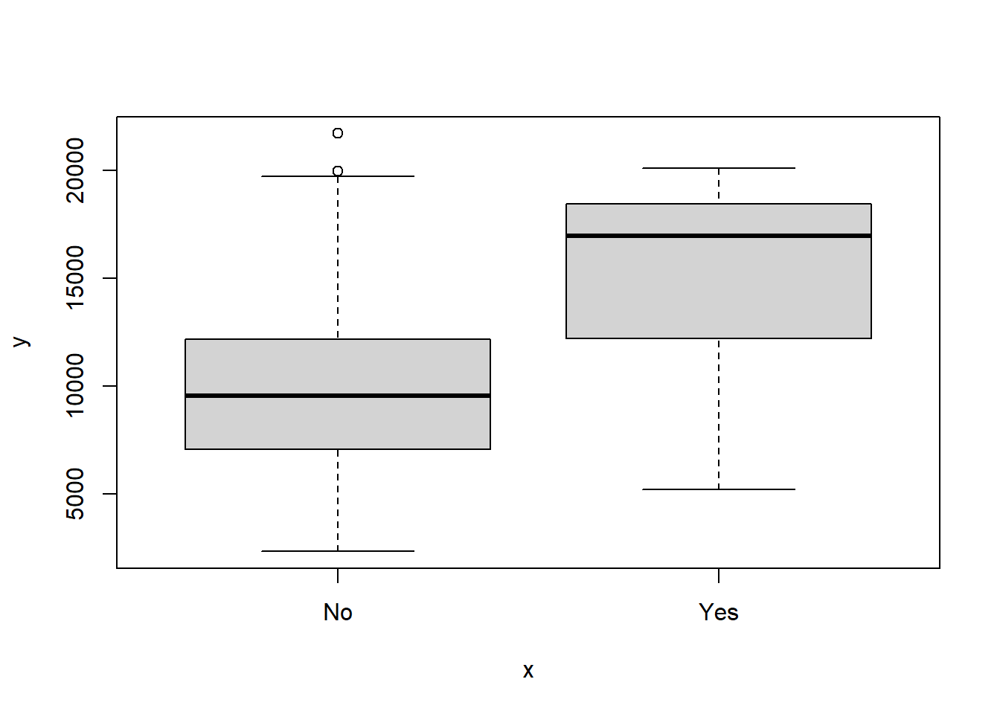
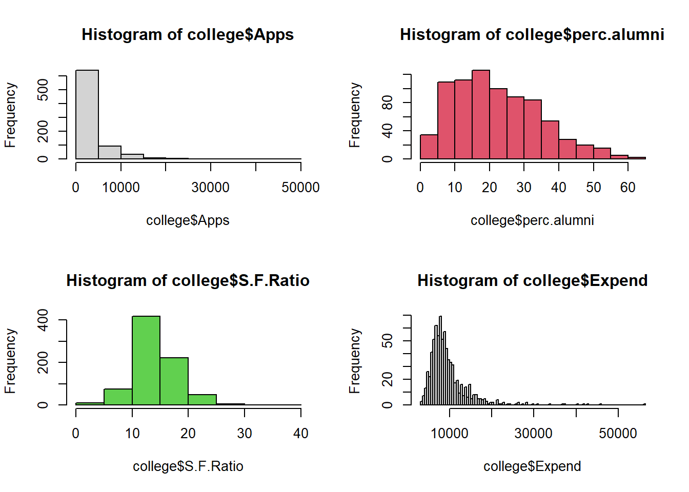

Practical 1
In this practical, you will revise and practice your R programming skills using some sample data from universities and colleges in the United States.
Click on the following link to download the file: college.csv .
This data file contains 18 variables for 777 different universities and colleges in the United States. The variables are:
- Private : Public/private indicator
- Apps : Number of applications received
- Accept : Number of applicants accepted
- Enroll : Number of new students enrolled
- Top10perc : New students from top 10% of high school class
- Top25perc : New students from top 25% of high school class
- F.Undergrad : Number of full-time undergraduates
- P.Undergrad : Number of part-time undergraduates
- Outstate : Out-of-state tuition
- Room.Board : Room and board costs
- Books : Estimated book costs
- Personal : Estimated personal spending
- PhD : Percent of faculty with Ph.D.’s
- Terminal : Percent of faculty with terminal degree
- S.F.Ratio: Student/faculty ratio
- perc.alumni : Percent of alumni who donate
- Expend : Instructional expenditure per student
- Grad.Rate : Graduation rate
Code
## Private Apps Accept Enroll Top10perc Top25perc
## Abilene Christian University Yes 1660 1232 721 23 52
## Adelphi University Yes 2186 1924 512 16 29
## Adrian College Yes 1428 1097 336 22 50
## Agnes Scott College Yes 417 349 137 60 89
## Alaska Pacific University Yes 193 146 55 16 44
## Albertson College Yes 587 479 158 38 62
## F.Undergrad P.Undergrad Outstate Room.Board Books
## Abilene Christian University 2885 537 7440 3300 450
## Adelphi University 2683 1227 12280 6450 750
## Adrian College 1036 99 11250 3750 400
## Agnes Scott College 510 63 12960 5450 450
## Alaska Pacific University 249 869 7560 4120 800
## Albertson College 678 41 13500 3335 500
## Personal PhD Terminal S.F.Ratio perc.alumni Expend
## Abilene Christian University 2200 70 78 18.1 12 7041
## Adelphi University 1500 29 30 12.2 16 10527
## Adrian College 1165 53 66 12.9 30 8735
## Agnes Scott College 875 92 97 7.7 37 19016
## Alaska Pacific University 1500 76 72 11.9 2 10922
## Albertson College 675 67 73 9.4 11 9727
## Grad.Rate
## Abilene Christian University 60
## Adelphi University 56
## Adrian College 54
## Agnes Scott College 59
## Alaska Pacific University 15
## Albertson College 55## Private Apps Accept Enroll
## Length:777 Min. : 81 Min. : 72 Min. : 35
## Class :character 1st Qu.: 776 1st Qu.: 604 1st Qu.: 242
## Mode :character Median : 1558 Median : 1110 Median : 434
## Mean : 3002 Mean : 2019 Mean : 780
## 3rd Qu.: 3624 3rd Qu.: 2424 3rd Qu.: 902
## Max. :48094 Max. :26330 Max. :6392
## Top10perc Top25perc F.Undergrad P.Undergrad
## Min. : 1.00 Min. : 9.0 Min. : 139 Min. : 1.0
## 1st Qu.:15.00 1st Qu.: 41.0 1st Qu.: 992 1st Qu.: 95.0
## Median :23.00 Median : 54.0 Median : 1707 Median : 353.0
## Mean :27.56 Mean : 55.8 Mean : 3700 Mean : 855.3
## 3rd Qu.:35.00 3rd Qu.: 69.0 3rd Qu.: 4005 3rd Qu.: 967.0
## Max. :96.00 Max. :100.0 Max. :31643 Max. :21836.0
## Outstate Room.Board Books Personal
## Min. : 2340 Min. :1780 Min. : 96.0 Min. : 250
## 1st Qu.: 7320 1st Qu.:3597 1st Qu.: 470.0 1st Qu.: 850
## Median : 9990 Median :4200 Median : 500.0 Median :1200
## Mean :10441 Mean :4358 Mean : 549.4 Mean :1341
## 3rd Qu.:12925 3rd Qu.:5050 3rd Qu.: 600.0 3rd Qu.:1700
## Max. :21700 Max. :8124 Max. :2340.0 Max. :6800
## PhD Terminal S.F.Ratio perc.alumni
## Min. : 8.00 Min. : 24.0 Min. : 2.50 Min. : 0.00
## 1st Qu.: 62.00 1st Qu.: 71.0 1st Qu.:11.50 1st Qu.:13.00
## Median : 75.00 Median : 82.0 Median :13.60 Median :21.00
## Mean : 72.66 Mean : 79.7 Mean :14.09 Mean :22.74
## 3rd Qu.: 85.00 3rd Qu.: 92.0 3rd Qu.:16.50 3rd Qu.:31.00
## Max. :103.00 Max. :100.0 Max. :39.80 Max. :64.00
## Expend Grad.Rate
## Min. : 3186 Min. : 10.00
## 1st Qu.: 6751 1st Qu.: 53.00
## Median : 8377 Median : 65.00
## Mean : 9660 Mean : 65.46
## 3rd Qu.:10830 3rd Qu.: 78.00
## Max. :56233 Max. :118.00
Code
## [1] "character"Code

Code
## No Yes
## 699 78Code

Code

Code
## Private Apps Accept Enroll Top10perc
## Massachusetts Institute of Technology 1 6411 2140 1078 96
## Top25perc F.Undergrad P.Undergrad
## Massachusetts Institute of Technology 99 4481 28
## Outstate Room.Board Books Personal PhD
## Massachusetts Institute of Technology 20100 5975 725 1600 99
## Terminal S.F.Ratio perc.alumni Expend
## Massachusetts Institute of Technology 99 10.1 35 33541
## Grad.Rate Elite
## Massachusetts Institute of Technology 94 YesCode
## Private Apps Accept Enroll Top10perc Top25perc
## Princeton University 1 13218 2042 1153 90 98
## F.Undergrad P.Undergrad Outstate Room.Board Books Personal
## Princeton University 4540 146 19900 5910 675 1575
## PhD Terminal S.F.Ratio perc.alumni Expend Grad.Rate Elite
## Princeton University 91 96 8.4 54 28320 99 Yes## Private Apps Accept Enroll Top10perc Top25perc
## Emporia State University 0 1256 1256 853 43 79
## F.Undergrad P.Undergrad Outstate Room.Board Books
## Emporia State University 3957 588 5401 3144 450
## Personal PhD Terminal S.F.Ratio perc.alumni Expend
## Emporia State University 1888 72 75 19.3 4 5527
## Grad.Rate Elite
## Emporia State University 50 No